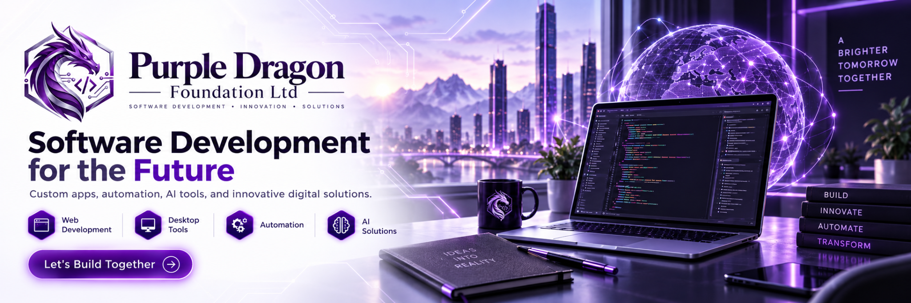

0 H/sHASHRATE
⌕Ctrl K
THEME STUDIOChoose your holographic color system
PurpleTheme changes are cosmetic only. Mining, Pool, ASIC, Bitcoin Core, security, and payout settings are untouched.
SYSTEM READY
BITCOIN MINING COMMAND CENTER
Pool mining, SHA-256d benchmarking, ASIC fleet control, and Bitcoin Core connectivity in one holographic workspace.
0ACCEPTED
—DIFFICULTY
00:00:00UPTIME
● Ready
MINING ENGINE
No active mining session.
▦
v2.0 APPLICATION ARCHITECTURESTARTING
SERVICES0
RUNNING0
ISSUES0
PERFORMANCE OVERVIEW
● Idle100%HEALTHReady
AVG / CURRENT0%
ACCEPTANCE0%
SHARES0
WORKERS0
MINING SESSION
Pool EndpointNo pool session
ReadyCurrent Job—
—Total Hashes0
0 workersExpected Share—
—QUICK ACTIONS
HASHRATE ACTIVITY
Live sessionSYSTEM MONITOR
Live hardware—CPU CORES
0ASIC DEVICES
0SUBMITTED
0REJECTED
RECENT ACTIVITY
v1.6.0 · BENCHMARK LAB 2.0
Benchmark Lab 2.0
Measure this PC's local SHA-256d CPU performance with timed runs, stability scoring, worker-scaling analysis, local history, and exportable reports. No pool or wallet connection is used.
READY
Local SHA-256d Performance
Choose a preset or custom duration, then run a local benchmark.
BMS SCORE
0.00
Local comparison score
0 H/sCURRENT
0 H/sAVERAGE
0 H/sPEAK
100%STABILITY
0TOTAL HASHES
BENCHMARK RUN
Timed local testScore formula
BMS Score = average kH/s × measured stability. It is intended for comparing this PC with its own prior runs, not as a universal hardware ranking.
WORKER SCALING TEST
ReadyAutomatically tests 1, 2, 4… workers up to this CPU's logical processor count and measures scaling efficiency.
No scaling run yet.
BENCHMARK HISTORY
RUNS0
BEST SCORE0.00
LATEST SCORE0.00
CPU—
| TIME | RUN | WORKERS | AVG | PEAK | STABILITY | SCORE | SCALING |
|---|---|---|---|---|---|---|---|
| No benchmark results yet. | |||||||
v1.7.0 · LOCAL INTERACTIVE LEARNING CENTER
Mining Academy
Learn Bitcoin mining from fundamentals through block headers, Proof of Work, Stratum, ASIC efficiency, economics and security. Academy labs are isolated from wallets, credentials, ASIC controls, live workers, Bitcoin Core state and block submission.
◎
ACADEMY RANK
NEW MINER
Complete lessons, labs and quizzes to build local Academy progress.
0%
LESSONS0 / 12
LABS0 / 5
QUIZZES0 / 12
ACADEMY XP0
LEARNING PATH
12 lessonsLoading Mining Academy…
FUNDAMENTALS · BEGINNER
NOT STARTEDWhat Bitcoin Mining Does
Select a lesson from the learning path.
KNOWLEDGE CHECK
Not attemptedChoose a lesson to load its knowledge check.
Select one answer. You can retry immediately.
INTERACTIVE LABS
Proof-of-Work Laboratory
Every lab is local and educational. None can submit a block, control an ASIC, alter a wallet, or connect to a pool.
HASH EXPLORER
SHA-256 · SHA-256dSHA-256
—SHA-256d—DIFFICULTY & TARGET
numeric visualizerCALCULATED DIFFICULTY—256-BIT TARGET
—80-BYTE BLOCK HEADER LAB
Genesis block defaultsHEADER
—BLOCK HASH
—TARGET
—PROOF OF WORK—
MERKLE TREE LAB
up to 32 TXIDsMERKLE ROOT
—LEVELS—
NONCE MINING SIMULATOR
educational easy targetRESULTReadyBEST / FOUND HASH
—Attempts 0Rate 0 H/sNonce —
ACADEMY SAFETY BOUNDARY
local learning onlyNO WALLET ACCESSNo seeds, keys, wallet RPC or payout changes.
NO POOL CREDENTIALSNo workers, passwords or live Stratum sessions.
NO ASIC CONTROLNo frequency, voltage, restart or pool changes.
NO BLOCK SUBMISSIONNo submitblock or proposal path from Academy.
Mining Academy progress is stored locally under .bitcoin-miner-studio.
v1.1.0.1 · GUIDED SETUP
Mining Assistant
“Can I Mine?” readiness checks and guided setup for beginners. Advisory only — it never starts mining or changes hardware by itself.
✦
CAN I MINE?
CHECKING...
Reading local Miner Studio readiness...
—/100
WHAT DO YOU WANT TO DO?
Pick a goal and Mining Assistant will build a recommended path.
SYSTEM READINESS
Ready, setup and optional states explain exactly what is available.
THIS PCCHECKING
Reading CPU runtime...
POOLCHECKING
Reading pool configuration...
BITCOIN CORECHECKING
Reading node status...
ASICCHECKING
Reading positively identified fleet...
SOLOCHECKING
Reading Core/payout readiness...
SECURITYCHECKING
Reading Purple Dragon trust...
RECOMMENDED PATH
LEARN & TESTRun a guided check to build your path.
THIS COMPUTER
Local summaryCPU—
LOGICAL THREADS—
ARCHITECTURE—
PYTHON—
Important
CPU SHA-256d is useful for learning and benchmarking. Modern Bitcoin mainnet mining is ASIC-dominated.
Mining Assistant does not mine by itself.
It only reads local readiness and routes you to existing controls.
Pool Profiles & Smart Failover
Persistent pool profiles, secure per-profile credentials, policy-aware Stratum failover, primary recovery, endpoint diagnostics, and share analytics.
POOL SESSION
Stratum V1 · automatic failover · PowerTools 2.0SESSION STATUSIdleConfigure a primary endpoint and start mining when ready.
HEALTH—
ENDPOINT—
JOB AGE—
ACTIVE ENDPOINT—
CONNECT LATENCY—
SHARE LATENCY P95—
FAILOVERS0
RECONNECTS0
JOBS RECEIVED0
DIFF CHANGES0
BEST SHARE DIFF—
FAILOVER POLICY—
PRIMARY RECOVERY—
ENDPOINT UPTIME—
LAST FAILOVER—
POOL PROFILE CENTER
v1.4.0 · local profiles · secure credentialsPROFILES0
ACTIVE PROFILE—
FAILOVER POLICYBALANCED
PRIMARY RECOVERY5 min
PROFILE CREDENTIAL—
sec
%
Balanced: fail over after one confirmed endpoint failure and retry the primary after 5 minutes on a healthy backup.
SAVED PROFILES
passwords never stored here| PROFILE | ENDPOINTS | POLICY | FEE | CREDENTIAL | STATE |
|---|
Create or select a pool profile.
ACTIVE ENDPOINT CONFIGURATION
Credential storage · profile passwords stay in the secure credential backendSmart Failover cycles only through endpoints you explicitly configure or save in the active profile. The worker/password is shared across those endpoints and remains in the existing credential backend; passwords are never written into diagnostic reports or Stratum Inspector history.
STRATUM INSPECTOR
sanitized live protocol stateConnectedNo
AuthorizedNo
Current job—
Difficulty—
Extranonce1—
Extranonce2 bytes—
Clean jobs0
Job updates0
Duplicate submits prevented0
Last disconnect—
PROTOCOL EVENTS
credentials redacted by design| TIME | DIR | METHOD | DETAIL |
|---|
SHARE ANALYTICS
current / retained sessionDIFFICULTY HISTORY
latest pool changes| TIME | DIFFICULTY | SOURCE |
|---|
ENDPOINT DIAGNOSTICS LAB
IdleTests run on a Python background thread so the WebView stays responsive. Each configured endpoint is profiled through DNS, TCP/TLS, mining.subscribe, mining.authorize, and first-job observation.
| # | ENDPOINT | SCORE | TRANSPORT | DNS | CONNECT | SUBSCRIBE | AUTHORIZE | FIRST JOB | STATUS |
|---|
Ready.
Bitcoin Core
Automatic Bitcoin Core setup, live JSON-RPC node health, and a decoded getblocktemplate work engine.
BITCOIN CORE SETUP ASSISTANT
v1.3.0.2 · Data-Dir GuardDATA DIRECTORY—
DATA-DIR GUARDUNKNOWN
NETWORK—
RPC PORT—
RPC LISTENING—
COOKIE AUTH—
SERVER=1—
CORE EXECUTABLE—
COOKIE FILE—
Detection has not run yet.
NODE STATUSNot checkedConfigure Bitcoin Core RPC below.
CHAIN—
BLOCK HEIGHT—
SYNC—
PEERS—
DIFFICULTY—
NETWORK HASH—
MEMPOOL TX—
NODE VERSION—
RPC CONNECTION
Automatic health checksNODE DETAILS
v1.0.0 Stable · Coinbase + Core managerBlocks / headers—
Initial block download—
Pruned—
Network active—
Protocol version—
Relay fee—
Best block hash—
WarningsNone
BLOCK TEMPLATE ENGINE
getblocktemplate · waitingWORK TEMPLATEWaitingRequest a template from Bitcoin Core.
AGE—
NEXT REFRESH—
RPC—
NEXT HEIGHT—
TRANSACTIONS—
COINBASE VALUE—
TEMPLATE DIFFICULTY—
TX FEES—
SUBSIDY EST.—
TX WEIGHT—
VERSION—
Previous block hash—
Target—
Compact bits—
Nonce range—
Current time—
Minimum time—
Weight limit—
Sigop limit—
Rules—
Mutable fields—
The engine requests a SegWit-aware work template, validates the target, and prepares normalized work metadata for the upcoming solo-mining stages.
Waiting for getblocktemplate.
COINBASE & PAYOUT
public-address payout · preview onlyCOINBASE BUILDERWaitingEnter a payout address and build a preview.
HEIGHT—
SCRIPT SIG—
OUTPUTS—
Use a public receiving address only. Bitcoin Miner Studio never needs your wallet seed phrase or private key to construct a coinbase payout.
PAYOUT TYPE—
MAX REWARD—
SUBSIDY—
TEMPLATE FEES—
TX SIZE—
TX WEIGHT—
SEGWIT COMMITMENT—
EXTRANONCE—
Coinbase TXID—
Payout scriptPubKey—
Witness commitment—
Coinbase preview has not been built yet.
Raw coinbase transaction preview
—
SOLO MINING DASHBOARD+
SHA-256d · live probability · stale-work protectionLOCAL CANDIDATE SEARCHIdleReady for a validated payout address and current block template.
HEIGHT—
WORK AGE—
EXTRANONCE—
HASHRATE—
TOTAL HASHES0
BEST DIFFICULTY—
BEST / TARGET—
AVG HASHRATE—
PEAK HASHRATE—
EXPECTED MEAN TIME—
50% PROBABILITY TIME—
SESSION CHANCE—
1 HOUR CHANCE—
24 HOUR CHANCE—
7 DAY CHANCE—
BEST WORK TOWARD TARGET—
100% means a target-valid candidate was found.
WORK RELIABILITYIdle
Template switches 0
Stale batches 0
Stale hashes 0
Rejected stale candidates 0
SOLO HASHRATE
last 90 secondsMainnet CPU solo mining is a real SHA-256d search but the probability is extremely small. Dashboard+ reports the probability mathematically and protects against stale work; use Regtest Mining Laboratory to exercise rapid accepted-block workflows.
Nonce—
Extranonce rolls0
Effective batch—
Auto fresh work—
Previous block—
Merkle root—
Best hash—
Network target—
Candidate header—
SubmissionGuarded v1.0.0 Stable path
BEST WORK HISTORY
new session bests onlyNo best-work samples yet.
Solo Mining Dashboard+ has not been started.
BLOCK ASSEMBLY & SUBMISSION
background block assembly · proposal validation · guarded submitblockCANDIDATE PIPELINEWaitingWaiting for a target-valid solo-mining candidate.
HEIGHT—
SIZE—
WEIGHT—
TRANSACTIONS—
TARGET CHECK—
PROPOSAL—
SUBMITBLOCK—
The submission path accepts no arbitrary block hex. It only uses a candidate preserved internally after SHA-256d meets the live Bitcoin Core target. Proposal validation and a fresh chain-tip check run before submitblock.
Block hash—
Previous block—
Merkle root—
Candidate source—
Archive—
Run Test Block Assembly any time. A structure test never becomes a mining candidate; proposal/submission controls unlock only after Solo Mining finds a target-valid hash.
REGTEST MINING LABORATORY
isolated local chain · no mainnet funds · RPC 19443ISOLATED LAB NODEStoppedStart the lab to create a private local Bitcoin test chain.
HEIGHT0
PROGRESS—
RPC19443
SESSION BLOCKS0
SPENDABLE0 BTC
IMMATURE0 BTC
LAST HASHES—
LAST NONCE—
PROPOSAL—
SUBMITBLOCK—
NETWORKREGTEST
The laboratory runs a second Bitcoin Core instance in a dedicated data directory with regtest, P2P listening/discovery disabled, and its own wallet. Your synced mainnet node and mainnet wallet are not switched or modified.
Lab data directory—
Regtest payout address—
Best block—
Last accepted block—
Executable—
Regtest Mining Laboratory has not been started.
RPC DIAGNOSTICS
mainnet Core · getblocktemplate · proposal · submitblock · isolated regtest labWaiting for Bitcoin Core.
v1.2.0 · LOCAL ESTIMATOR
Profitability & Power Center
Estimate power cost, expected BTC production, pool-fee impact, efficiency, break-even electricity and solo odds. Estimates are not guarantees.
ESTIMATED NET / DAY
$0.00
Enter your hardware, power and market assumptions to calculate an estimate.
BTC / DAY0 BTC
POWER / DAY$0.00
BREAK-EVEN POWER— / kWh
EFFICIENCY— W/TH
MINER & POWER INPUTS
Local assumptionsNETWORK & MARKET ASSUMPTIONS
MANUALPOWER ECONOMICS
30.44-day month
Energy per day0.00 kWh
Electricity / day$0.00
Electricity / month$0.00
Revenue after pool / day$0.00
Estimated net / month$0.00
Estimated net / year$0.00
Estimate only
Pool payout schemes, downtime, difficulty changes, transaction fees, hardware degradation, taxes and electricity billing can materially change real results.
EXPECTED MINING OUTPUT
Statistical expectationEXPECTED BLOCKS / DAY0
GROSS BTC / DAY0 BTC
AFTER POOL FEE0 BTC
NETWORK SHARE0%
MEAN TIME TO BLOCK—
50% PROBABILITY TIME—
SOLO BLOCK ODDS
Poisson estimate1 hour0%
24 hours0%
7 days0%
30 days0%
1 year0%
Financial estimates are informational only.
Profitability is not guaranteed. BTC price and transaction-fee assumptions are manual; Bitcoin Core contributes local network data only.
v1.3.0.1 · LOCAL COMPATIBILITY REGISTRY
Hardware Compatibility Center
See exactly why an ASIC is recognized, which controls are actually available, and where support is limited. Miner Studio never promotes a generic network device just because a port is open.
POSITIVE-EVIDENCE ASIC INVENTORY
NO VERIFIED HARDWARE YET
Compatibility is derived from ASIC-specific runtime evidence already collected by Miner Studio. No new network scan runs from this page.
CONFIRMED ASICS0
VERIFIED RUNTIME0
FULL CONTROL0
NOT PROMOTED0
VERIFIED RUNTIMEAPI evidence + recognized family
SUPPORTED FAMILYrecognized ASIC Web UI
GENERIC / LIMITEDASIC evidence, limited mapping
NOT PROMOTEDno positive ASIC evidence
DETECTED / KNOWN HARDWARE
Capabilities shown here come from current runtime evidence—not assumptions.
No hardware compatibility state loaded yet.
BUILT-IN FAMILY REGISTRY
Recognition families built into this release. Exact firmware behavior can vary.
CAPABILITY POLICY
Evidence-gatedMonitoringASIC API verified
Hashrate/temperature/fan/power are shown only when the firmware actually reports them.
Pool ControlAPI + pools verified
Miner Studio does not assume pool switching merely because TCP 4028 is open.
RestartASIC API verified
The button is available only when runtime API evidence is present; firmware can still reject it.
ASIC Solo BridgeAPI verified + private LAN
Existing ownership/admin authorization and private-LAN restrictions remain mandatory.
FALSE-POSITIVE SHIELD
Strict discoveryA ROUTER IS NOT AN ASIC
Generic HTTP/HTTPS, a login page, or an open candidate port is not enough. Auto-discovery only promotes positive cgminer-compatible API evidence or a recognized Antminer, WhatsMiner, or Avalon Web UI.
Generic HTTP only → NOT PROMOTED
Open TCP 4028 only → NOT PROMOTED
Recognized ASIC Web UI → SUPPORTED FAMILY
Verified ASIC API → VERIFIED / GENERIC API
“Verified Runtime” is Miner Studio evidence—not manufacturer certification.
The Compatibility Center does not flash firmware, modify miners, scan the LAN, or phone home. Use ASIC Control for explicit authorized device operations.
ASIC Control Center
Discover, monitor, and connect your authorized Bitcoin ASIC miners to Miner Studio's LAN-only solo-mining bridge.
ASIC SOLO MINING BRIDGE
Stratum V1 · private LAN only · guarded Bitcoin Core submissionLOCAL STRATUM SERVERStoppedStart the bridge after Bitcoin Core, Block Template Engine, and payout configuration are ready.
HEIGHT—
CLIENTS0
JOB AGE—
ACCEPTED SHARES0
REJECTED0
STALE0
BEST SHARE DIFF—
SHARE HASHRATE EST.—
AUTHORIZED WORKERS0
CANDIDATES0
NETWORK—
Miner Studio never needs an ASIC wallet key. Jobs pay the public payout address configured under Bitcoin Core → Coinbase & Payout. The listener refuses wildcard/public interfaces and non-private clients. A Bitcoin-network-target-valid ASIC result is preserved but never auto-submitted.
ASIC Solo Bridge has not been started.
Payout address—
Current job—
Previous block—
Last share hash—
Last candidate—
STRATUM WORKERS
connected + recent| WORKER | IP | STATE | SHARES | STALE | BEST DIFF |
|---|
MINERS
0 devices| IP | ALIAS | MODEL | VERIFICATION | STATUS | SOLO | HEALTH | HASHRATE | TEMP | POOL | ACTIONS |
|---|
Miner XP & Hash Hunt
A local cosmetic progression mini-game. It never changes real Bitcoin mining speed, payouts, ASIC behavior, Bitcoin Core, network difficulty, or block-submission logic.
₿
MINER RANKLevel 1Hash Rookie
0 / 50 XP50 XP to next level
⛏ HASH HUNT
double-SHA256 mini-game · cosmetic onlyRun one simulated hash attempt at a time, discover mini-game shares, build streaks, complete a block meter, and earn local Miner XP. The generated hashes are not Bitcoin block headers and are never submitted anywhere.
SHARE XP+10 XP
BLOCK BONUS+120 XP
VALID SHARES0 / 8
HASH STREAK0×
ATTEMPTS0
BEST STREAK0×
BLOCKS CLAIMED0
TOTAL GAME SHARES0
BLOCK PROGRESS0%
MINING CONSOLE
Ready for a hash attempt.
Press Run Hash Attempt to start the mini-game.
—
★ ACHIEVEMENTS
0 / 6 unlocked◆ COSMETIC UNLOCKS
Miner XP onlyXP & LEVELING POLICY
local · cosmetic · no monetary valueMiner XP is stored locally in the WebView profile and can be reset at any time. It is intentionally not protected as money, mining credit, hashpower, or a transferable asset. Editing or resetting XP cannot improve real mining results.
REAL HASHRATEUnaffected
BITCOIN PAYOUTSUnaffected
BITCOIN COREUnaffected
ASIC CONFIGUnaffected
NETWORK TARGETUnaffected
SUBMITBLOCKUnaffected
v1.5.0 · WINDOWS LOCAL COMPANION
Windows Tray & Background Monitoring
Keep Miner Studio's existing local health monitors available while the main window is hidden. The tray is read-only for mining hardware and never exposes remote-control commands.
WINDOWS SYSTEM TRAY
CHECKING TRAY SUPPORT
Reading the local Windows tray state.
TRAY—
WINDOWVISIBLE
NOTIFICATIONS—
HEALTH—
TRAY BEHAVIOR
local Windows settingsTray settings are stored locally in Miner Studio settings.
BACKGROUND STATUS
privacy-safe summary●
Pool idle · Core offline · ASIC none
Local monitoring status will appear here.
PoolIdle
Bitcoin CoreOffline
ASIC FleetNone
Purple DragonChecking
Last notificationNone
TRAY COMMANDS
intentionally limitedOpen Miner StudioRestore and focus the main window.
Current StatusShow a privacy-safe local Pool/Core/ASIC summary.
Hide WindowKeep background services active while removing the main window.
ExitPerform the normal clean shutdown path.
SECURITY BOUNDARY
Purple Dragon◆
NO MINING CONTROLS IN THE TRAY
The tray does not start mining, submit blocks, change pools, restart ASICs, reveal credentials, or accept remote commands. Those actions stay inside the existing explicit Miner Studio workflows and Purple Dragon gates.
Monitoring & Analytics
Persistent local telemetry for Pool, Solo, Bitcoin Core, and authorized ASIC fleet health. No cloud analytics and no mining credentials are stored.
LOCAL TELEMETRY RECORDERStartingPreparing local SQLite history.
HASHRATE HISTORY
Pool + SoloPoolSolo
LATENCY & HEALTH
Pool p95 + Core RPC + Pool healthShare p95Core RPCPool health
ASIC FLEET HISTORY
Hashrate + temperature + healthHashrateMax tempHealth
BITCOIN CORE HISTORY
RPC latency + peersRPC latencyPeers
OPERATIONAL EVENTS
threshold activation + recoveryDATA CONTROLS
local onlyStored fields are operational counters and telemetry only. Pool passwords, RPC passwords, private keys, wallet seeds, payout secrets, and raw authorization credentials are excluded from analytics.sqlite3.
Local telemetry is stored under .bitcoin-miner-studio.
v1.8.0 · DIAGNOSTICS & SUPPORT CENTER
Diagnostics & Support Center
Read-only system health checks, guided remediation, privacy-safe evidence collection, and local support bundles. Diagnostics never start mining, change ASICs, switch pools, modify Bitcoin Core, submit blocks, or upload data.
◇
OPERATIONAL HEALTH
NOT CHECKED
Run a Quick Scan or Full Diagnostic to inspect the current local environment.
—/100
v2 SERVICE ARCHITECTURE
BMS-ARCH-2OVERALLSTARTING
REGISTERED0
RUNNING0
DEGRADED / ERROR0
Service registry is starting.
HEALTH BY AREA
Current runtime, security, storage, configuration and mining-stack evidence.
No diagnostic result yet.
DIAGNOSTIC CHECKS
Waiting for scan| STATE | AREA | CHECK | DETAIL |
|---|---|---|---|
| Run diagnostics to populate the health matrix. | |||
ISSUES & NEXT STEPS
0 issuesNo issues have been evaluated yet.
LOCAL SUPPORT BUNDLE
Privacy sanitizedCreate a ZIP containing the diagnostics report, system summary, Purple Dragon security summary and optional redacted settings/activity evidence. Nothing is uploaded automatically.
✓ Mining / RPC passwords excluded
✓ Publisher private keys excluded
✓ Wallet seeds / mnemonics excluded
✓ Analytics SQLite database excluded
✓ No automatic upload / phone-home
LAST LOCAL BUNDLE——
Diagnostics & Support Center is ready.
SYSTEM SNAPSHOT
Support-safeVersion2.0.1
Operating system—
Python—
Architecture—
CPU cores—
Application data—
⊕
Evidence, not automatic repair
The center explains detected conditions and recommended next steps. It does not silently rewrite configuration or perform mining/network control actions.
Update & Release Center
Local-first update package verification, trusted staging, release-channel policy, rollback metadata, release descriptors, and Stable release readiness. Candidate packages are never executed and the running application is never replaced silently.
CURRENT TRUSTED RELEASE
STABLEVERSION2.0.1
BUILD ID—
PURPLE DRAGONCHECKING
PROTECTED FILES—
LOCAL-FIRSTNO AUTO DOWNLOADNO SILENT APPLYTRUST REQUIRED
UPDATE CHANNEL
Preference onlyStable accepts signed Stable packages only. Preview also permits signed Preview packages. v2.0.1 does not contact an update server automatically.
Explicit offline applyInspection and staging never overwrite the active Bitcoin Miner Studio folder. Close the application before manually promoting a complete trusted release.
PACKAGE INSPECTOR
.7z · .zip · extracted folderDECISIONNOT INSPECTED
CANDIDATE—
RELATION—
SIGNATURE—
PROTECTED FILES—
PACKAGE SHA-256—
Select a complete release package or extracted release folder to inspect it without executing candidate code.
STAGING & ROLLBACK PLAN
Local app-data onlySTAGED RELEASENONE—
✓
Cryptographic gateOnly a candidate with a valid Purple Dragon publisher signature and complete protected-file hashes can be staged.
◇
Rollback metadataStaging records the current build and target release so an explicit offline update/rollback has traceable provenance.
×
No in-place patchingThe running source tree is never rewritten by Update & Release Center.
RELEASE DESCRIPTOR
Public verification metadataExport a support-safe JSON descriptor containing the current version, build ID, release seal, publisher key ID, protected-file digest, and trust state. Private keys and credentials are never included.
Update & Release Center is ready.
LOCAL UPDATE HISTORY
Most recent actionsNo update staging actions recorded yet.
STABLE RELEASE ENGINEERING
Release Readiness
Existing preflight gates remain part of v2.0.1 and sit inside Update & Release Center.
RELEASE READINESSCheckingWaiting for the initial release preflight.
0/100
RELEASE GATES
Not checked| STATE | AREA | CHECK | DETAIL |
|---|
RELEASE ACTIONS
local release engineeringPreflight does not start/stop mining or modify Bitcoin Core/ASIC settings. Support bundles are created locally and are never uploaded automatically.
◆
Stable baselineStable release gates remain active while feature milestones advance. v2.0.1 preserves Update & Release Center while adding the v2 architecture/workspace layer without weakening mining controls or Purple Dragon gating.
ACTIVE◇
Support privacyPasswords, seed phrases, private keys, wallet addresses, worker IDs, and the analytics database are excluded/redacted.
LOCAL⌁
Crash signalAn unclean previous application session appears as a warning for investigation, not as a mining lock.
ON✓
Release blockingMissing runtime/security/startup essentials produce RELEASE BLOCKED. Optional Bitcoin Core/pool/ASIC configuration does not.
STRICT
LAST LOCAL SUPPORT BUNDLE
—
Stable release readiness is initializing.
STABLE RELEASE POLICY
v2.0.1 stable baselineSTABLE MAINTENANCEBug fixes, compatibility fixes, security hardening, performance regressions, documentation, packaging, accessibility and UI polish remain supported.
v2.0.1 FEATURE SETBMS-ARCH-2 runtime services, explicit API contract, persistent workspace UX, Command Palette, Update & Release Center, Diagnostics, Mining Academy, Benchmark Lab 2.0, Pool Profiles, tray monitoring and the mining/Core/ASIC toolchain are included.
STABLE GATENo known blocking crashes, trusted Purple Dragon build, clean startup, stable Pool/Solo/Core/ASIC paths, Monitoring integrity and reproducible release diagnostics.
PUBLISHED BY PURPLE DRAGON FOUNDATION LTD
Purple Dragon Security Center
Signed release provenance, protected-file integrity, forensic build markers, and fail-safe critical-control gating.

◆
PURPLE DRAGON TRUST STATE
CHECKING
Verifying publisher signature and protected application files.
CRITICAL CONTROLSLOCKED
SCHEMEPD-PROVENANCE-2
RELEASE PROVENANCE
Public verification dataProvenance tag—
Publisher / creatorPurple Dragon Foundation ltd
Publisher key ID—
Release watermark—
Local install code—
Purple Dragon verification is starting.
PROTECTION POLICY
Defense in depth◆
Critical-action gatingMining starts, ASIC write controls, and submitblock are disabled when build trust fails.
ON◇
Publisher private keyThe private signing key is not shipped inside Bitcoin Miner Studio.
NOT EMBEDDED⌁
Offline verificationNo server or Internet connection is required to verify the signed release.
ON!
Protection limitTamper evidence makes unauthorized modifications detectable; it cannot make software impossible to copy or reverse engineer.
TRANSPARENTPROTECTED FILES
Waiting for verification| FILE | STATUS | EXPECTED | ACTUAL |
|---|---|---|---|
| Purple Dragon verification has not completed yet. | |||
Logs
Live events from the miner, pool, ASIC control center, and Bitcoin Core tests.